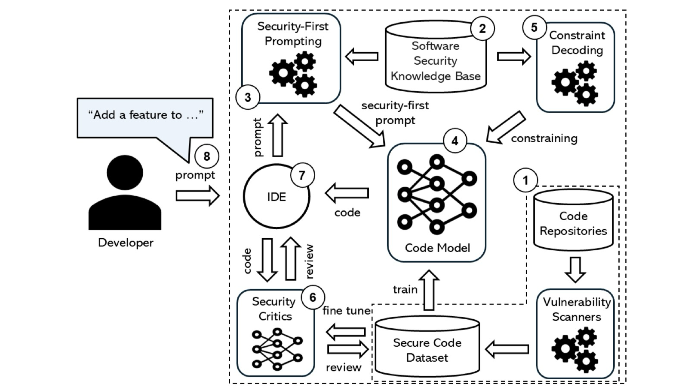

An overview of the SecureCoder architecture
Large Language Models (LLMs) are increasingly used for software development, but their reliability in generating secure code remains a critical concern. SecureCoder addresses these risks by introducing a comprehensive pipeline for security-aware code generation and evaluation.
By leveraging security-first prompting and constraint decoding, SecureCoder bridges the gap between AI-driven code synthesis and robust software security. Our research focuses on training a security-aware generator model alongside a dedicated discriminator model designed to identify and critique potential vulnerabilities in the generated code.
These innovations are implemented as a developer-friendly IDE plugin and a unified evaluation framework. The latter provides a CLI tool for rigorously testing models against industry benchmarks such as CWEval, SecCodePLT, and CyberSecEval.
Integrates GNNs to model code structure at the token level, improving the accuracy and safety of generated code. (Tiftikci & Mezini, 2025)
Combines symbolic execution with fine-tuning to identify potential vulnerabilities during the model training process. (Sakharova et al., 2025)
Enhances model resilience by incorporating obfuscation techniques into pre-training to reduce the risk of generating insecure code. (Paul et al., 2025)
Combines LLMs with formal verification tools (e.g., symbolic execution) and GNNs to address security gaps in code generation.
Improves LLM reasoning capabilities through structured prompting approaches like Chain-of-Thought, aiding in the identification of security flaws. (Wei et al., 2022)
Explores emerging frameworks to merge formal verification with LLMs, and relies on standardized datasets (like SecurityEvalDataset) for cross-model comparisons.